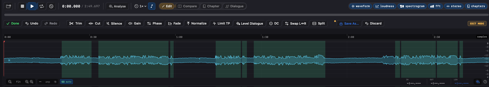
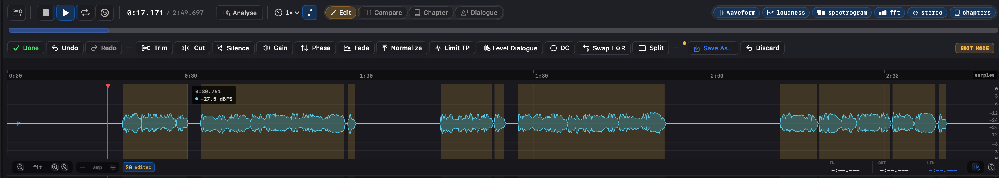
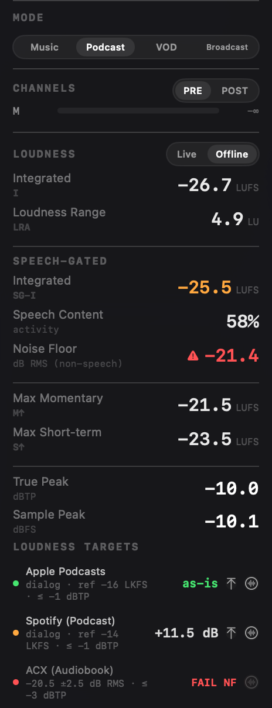
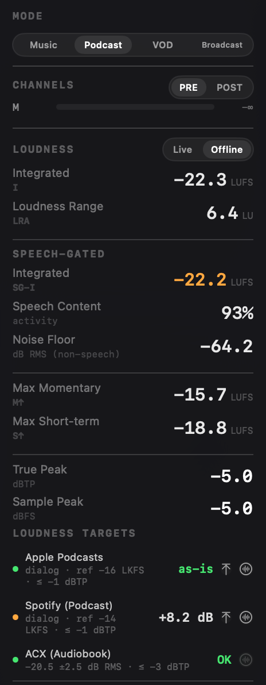

ACX rejects an audiobook submission on three numbers: loudness (RMS between -23 and -18 dB), true peak (above -3 dBTP), and noise floor (above -60 dB RMS). The first two are familiar to anyone who has shipped to streaming. The third is the one narrators trip over, because it measures something you can't hear while you are performing - the room when you stop talking.
Noise floor in ACX terms is not the loudest background moment. It is the RMS level of the audio between phrases: the room tone, the air handling, the computer fan, the traffic through a cracked window, the hum off a light. Ten seconds of an AC compressor cycling on during chapter 14 can fail the whole file. A laptop fan caught by a cardioid at the wrong angle can fail it. None of it is audible under the voice; all of it counts when the voice stops.
Why the obvious measurement is wrong
The naive way to measure a noise floor is to take the quietest few percent of the file and call that the floor. It is quick, and it is wrong for spoken word, for two reasons.
First, the quiet samples during speech aren't room tone. The dips between syllables, the closures of plosives, the breaths - these sit well below the spoken words but well above the actual room. Include them and your "floor" is really the bottom of the speech, several dB more optimistic than the truth.
Second, a single figure for a four-hour file averages a noisy chapter into nineteen clean ones. The book reads fine on the global number; ACX rejects on the one chapter where the computer fan got a little louder. The correct measurement is narrower: take only the samples that are genuinely not speech, and measure those. Which means you first have to know, sample by sample, where the speech is.
Gating on speech
Specula classifies speech with a neural voice-activity detector - Silero (MIT-licensed), run through FluidAudio, with the model bundled in the app so the analysis runs entirely on your Mac. It runs at 16 kHz over every loaded file and labels each 100 ms block as speech or not. A lighter spectral detector covers the rare file the neural model can't process.
That speech map already drives the dialogue-gated loudness reading. The noise floor is a second reader of the same timeline: for every block the detector marks as non-speech, Specula takes the plain, unweighted RMS and folds it into a running figure. The number recomputes block by block, so it tracks live as the file plays. A file with no non-speech at all reads negative infinity, and the gate passes trivially.

You are not stuck with the detector's first guess, which matters when a file fools it - a music bed with vocals read as speech, a whispered line read as silence. The Speech tab in Settings exposes three sliders: a confidence threshold (default 0.5; lower picks up quieter speech, higher rejects more), a minimum region duration that drops clicks and breaths, and a merge gap that fuses regions split by short pauses. Move any one and the file re-analyses in about half a second.
And where detection is simply wrong about a stretch, Dialogue mode lets you paint the regions by hand - drag an edge, split at the playhead, add or delete a region. Moved regions turn amber and new ones blue against the detector's green, so it is obvious where you have overruled it. Either way, the dialogue-gated loudness and the noise floor recompute from whatever the regions end up being - the number follows your call on what counts as speech, not just the model's.
Measuring the floor on the gaps also points to the fix. The room tone lives in the gaps between phrases, so pulling the level down there takes it out of the file and out of the number, while the speech itself is left alone:

Reading the verdict
The floor shows in the Loudness panel next to the other RMS readouts, labelled for exactly what it is - dB RMS over non-speech. Above -60 dB it turns red and the ACX preset's row reads "FAIL NF"; bring it under the ceiling and the row reads OK. Here is the panel on either side of that edit:


Same three gates, one panel, one glance - and the noise floor is the row that moved. The ACX preset carries Apple Podcasts and Spotify (Podcast) alongside it in penalty terms; ACX is the row with the noise-floor gate attached.
The workflow
For an ACX submission it comes down to this: drop the chapter file in, give the detector a few seconds to run (a one-hour chapter analyses in seconds on Apple silicon), and read the panel. If a row is red you know which of the three things to fix - re-record the noisy passage, pull the loudness into the window, or run a gentle noise reduction - before you upload and wait for the rejection email.
And because the floor is computed per block and shown live, you can scrub to the chapter the report flagged and watch the number climb at exactly the point where the fan got louder. The measurement doesn't just say a file failed; it shows you where.
Pairs with per-chapter analysis
The noise floor is a whole-file gate. The other half of audiobook QC is per chapter: is every chapter inside the loudness window, and close to the book's centre. That is Chapter mode, which segments the book at its silences and scores each chapter on the same three ACX gates. The floor measurement and the chapter pass share the same engine - together they answer "is this shippable to ACX" before ACX answers it for you.
Specula is a desktop audio analyser for macOS. The speech-gated noise floor, the ACX preset and chapter analysis ship in 1.0. Intro price $49 through 31 July, then $99. Requires macOS 14 (Sonoma) or later.